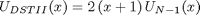

Relations between DCT_I and DST_II
Contents
Definitions
Result of transform is y=x*T, where y, x are row-vectors T is transform matrix
DCT_I matrix definition
N=8; DCT1=cos(pi/N*(0:N)'*(0:N))
DCT1 =
Columns 1 through 8
1.0000 1.0000 1.0000 1.0000 1.0000 1.0000 1.0000 1.0000
1.0000 0.9239 0.7071 0.3827 0.0000 -0.3827 -0.7071 -0.9239
1.0000 0.7071 0.0000 -0.7071 -1.0000 -0.7071 -0.0000 0.7071
1.0000 0.3827 -0.7071 -0.9239 -0.0000 0.9239 0.7071 -0.3827
1.0000 0.0000 -1.0000 -0.0000 1.0000 0.0000 -1.0000 -0.0000
1.0000 -0.3827 -0.7071 0.9239 0.0000 -0.9239 0.7071 0.3827
1.0000 -0.7071 -0.0000 0.7071 -1.0000 0.7071 0.0000 -0.7071
1.0000 -0.9239 0.7071 -0.3827 -0.0000 0.3827 -0.7071 0.9239
1.0000 -1.0000 1.0000 -1.0000 1.0000 -1.0000 1.0000 -1.0000
Column 9
1.0000
-1.0000
1.0000
-1.0000
1.0000
-1.0000
1.0000
-1.0000
1.0000
DST_II matrix definition
DST2=sin(pi/N*((0:N-1)+1)'*((0:N-1)+1/2))
DST2 =
0.1951 0.5556 0.8315 0.9808 0.9808 0.8315 0.5556 0.1951
0.3827 0.9239 0.9239 0.3827 -0.3827 -0.9239 -0.9239 -0.3827
0.5556 0.9808 0.1951 -0.8315 -0.8315 0.1951 0.9808 0.5556
0.7071 0.7071 -0.7071 -0.7071 0.7071 0.7071 -0.7071 -0.7071
0.8315 0.1951 -0.9808 0.5556 0.5556 -0.9808 0.1951 0.8315
0.9239 -0.3827 -0.3827 0.9239 -0.9239 0.3827 0.3827 -0.9239
0.9808 -0.8315 0.5556 -0.1951 -0.1951 0.5556 -0.8315 0.9808
1.0000 -1.0000 1.0000 -1.0000 1.0000 -1.0000 1.0000 -1.0000
Finding relations
From [1] we know that DCTI matrix can be expressed in terms of Tschebyshev polynomials
where
are roots of polynomial
DSTII matrix can be analogously expressed as
where
are roots of polynomial

Because there exist relation
and
we can express DCTI through DSTII
where
B=diag(-ones(1,N+1))+diag(ones(1,N),-1); B(1,:)=2; B(2,1)=2; B(end,end)=-2; B=B/2; D=diag([1, sin(pi/2/N*((0:N-1)+1))]);
Check expression of DCT_I through DST_II
Check DCTII matrix
DST2a=eye(N+1);DST2a(2:end,2:end)=DST2; inv(D)*DST2a*B x=randn(1,N+1) y=x*DCT1 % true result y1=x*inv(D)*DST2a*B % compute DCTI using DSTII transform
ans =
Columns 1 through 8
1.0000 1.0000 1.0000 1.0000 1.0000 1.0000 1.0000 1.0000
1.0000 0.9239 0.7071 0.3827 0 -0.3827 -0.7071 -0.9239
1.0000 0.7071 0 -0.7071 -1.0000 -0.7071 -0.0000 0.7071
1.0000 0.3827 -0.7071 -0.9239 -0.0000 0.9239 0.7071 -0.3827
1.0000 0.0000 -1.0000 -0.0000 1.0000 0.0000 -1.0000 -0.0000
1.0000 -0.3827 -0.7071 0.9239 0.0000 -0.9239 0.7071 0.3827
1.0000 -0.7071 -0.0000 0.7071 -1.0000 0.7071 0.0000 -0.7071
1.0000 -0.9239 0.7071 -0.3827 -0.0000 0.3827 -0.7071 0.9239
1.0000 -1.0000 1.0000 -1.0000 1.0000 -1.0000 1.0000 -1.0000
Column 9
1.0000
-1.0000
1.0000
-1.0000
1.0000
-1.0000
1.0000
-1.0000
1.0000
x =
Columns 1 through 8
-0.1821 1.5210 -0.0384 1.2274 -0.6962 0.0075 -0.7829 0.5869
Column 9
-0.2512
y =
Columns 1 through 8
1.3921 1.9254 0.8802 -1.2269 -0.3082 0.3123 -0.3544 -0.7343
Column 9
-5.2938
y1 =
Columns 1 through 8
1.3921 1.9254 0.8802 -1.2269 -0.3082 0.3123 -0.3544 -0.7343
Column 9
-5.2938
Check expression of DST_II through DCT_I
Check computation of DSTII matrix
D*DCT1*inv(B)
ans =
Columns 1 through 8
1.0000 0 0 0.0000 -0.0000 0 0 0
0 0.1951 0.5556 0.8315 0.9808 0.9808 0.8315 0.5556
-0.0000 0.3827 0.9239 0.9239 0.3827 -0.3827 -0.9239 -0.9239
-0.0000 0.5556 0.9808 0.1951 -0.8315 -0.8315 0.1951 0.9808
-0.0000 0.7071 0.7071 -0.7071 -0.7071 0.7071 0.7071 -0.7071
-0.0000 0.8315 0.1951 -0.9808 0.5556 0.5556 -0.9808 0.1951
-0.0000 0.9239 -0.3827 -0.3827 0.9239 -0.9239 0.3827 0.3827
0.0000 0.9808 -0.8315 0.5556 -0.1951 -0.1951 0.5556 -0.8315
0 1.0000 -1.0000 1.0000 -1.0000 1.0000 -1.0000 1.0000
Column 9
0
0.1951
-0.3827
0.5556
-0.7071
0.8315
-0.9239
0.9808
-1.0000
Check computation of DSTII transform
x=randn(1,N) y=x*DST2 % true result y1=[0 x]*D*DCT1*inv(B) % compute DSTII using DCTI transform
x =
0.4801 0.6682 -0.0783 0.8892 2.3093 0.5246 -0.0118 0.9131
y =
4.2410 0.7824 -1.1866 1.0198 2.6228 -2.5885 0.5181 -0.3236
y1 =
Columns 1 through 8
-0.0000 4.2410 0.7824 -1.1866 1.0198 2.6228 -2.5885 0.5181
Column 9
-0.3236
Reference
[1] Markus Pueschel, Jose M.F. Moura. The Algebraic Approach to the Discrete Cosine and Sine Transforms and their Fast Algorithms SIAM Journal of Computing 2003, Vol. 32, No. 5, pp. 1280-1316.